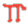
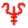
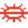
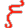

| Advanced Illusion | Развитая иллюзия | 5-ый уровень |
|  | Affect Normal Fires | Воздействовать на обычный огонь | 1-ый уровень |
| Airy Water | Воздушная вода | 5-ый уровень |
|  | Alarm | Тревога | 1-ый уровень |
| Alter Self | Изменить себя | 2-ой уровень |
| Animal Growth | Рост животных | 5-ый уровень |
| Animate Dead | Анимировать умершего | 5-ый уровень |
| Antimagic Shell | Антимагическая оболочка | 6-ой уровень |
| Antipathy-Sympathy | Антипатия-симпатия | 8-ой уровень |
| Armor | Броня | 1-ый уровень |
| Astral Spell | Астральное заклятье | 9-ый уровень |
| Audible Glamer | Звуковое волшебство | 1-ый уровень |
| Avoidance | Уклонение | 5-ый уровень |
| Banishment | Изгнание | 7-ой уровень |
| Bigby's Clenched Fist | Сжатый кулак Бигби | 8-ой уровень |
| Bigby's Crushing Hand | Сокрушающая рука Бигби | 9-ый уровень |
| Bigby's Forceful Hand | Сильная рука Бигби | 6-ой уровень |
| Bigby's Grasping Hand | Хватающая рука Бигби | 7-ой уровень |
| Bigby's Interposing Hand | Преграждающая рука Бигби | 5-ый уровень |
| Bind | Связать | 2-ой уровень |
| Binding | Путы | 8-ой уровень |
| Blindness | Слепота | 2-ой уровень |
| Blink | Мигать | 3-ий уровень |
| Blur | Расплывчивость | 2-ой уровень |
| Burning Hands | Пылающие руки | 1-ый уровень |
| Cantrip | Фокус | 1-ый уровень |
| Chain Lightning | Цепная молния | 6-ой уровень |
| Change Self | Превратить себя | 1-ый уровень |
| Chaos | Хаос | 5-ый уровень |
| Charm Monster | Очаровать монстра | 4-ый уровень |
| Charm Person | Очаровать персону | 1-ый уровень |
| Charm Plants | Очаровать растения | 7-ой уровень |
| Chill Touch | Леденящее прикосновение | 1-ый уровень |
|  | Clairaudience | Удалённая слышимость | 3-ий уровень |
| Clairvoyance | Удалённая видимость | 3-ий уровень |
| Clone | Клон | 8-ой уровень |
| Cloudkill | Убийственное облако | 5-ый уровень |
| Color Spray | Разноцветные брызги | 1-ый уровень |
| Comprehend Languages | Постигнуть языки | 1-ый уровень |
| Cone of Cold | Конус холода | 5-ый уровень |
| Confusion | Замешательство | 4-ый уровень |
| Conjure Animals | Призвать животных | 6-ой уровень |
| Conjure Elemental | Вызвать элементаль | 5-ый уровень |
| Contact Other Plane | Связаться с другим планом | 5-ый уровень |
| Contagion | Заражение | 4-ый уровень |
| Contingency | Неожиданность | 6-ой уровень |
| Continual Light | Непрерывный свет | 2-ой уровень |
| Control Weather | Управлять погодой | 6-ой уровень |
| Control Undead | Управлять неупокоенными | 7-ой уровень |
| Crystalbrittle | Хрупкость хрусталя | 9-ый уровень |
| Dancing Lights | Танцующие огни | 1-ый уровень |
| Darkness, 15' Radius | Темнота, радиус 15 футов | 2-ой уровень |
| Deafness | Глухота | 2-ой уровень |
| Death Fog | Смертоносный туман | 6-ой уровень |
| Death Spell | Смертоносное заклятье | 6-ой уровень |
| Deeppockets | Глубокие карманы | 2-ой уровень |
| Delayed Blast Fireball | Огненный шар с замедленным взрывом | 7-ой уровень |
| Delude | Обман | 3-ий уровень |
| Demand | Требование | 8-ой уровень |
| Demishadow Magic | Магия полутени | 6-ой уровень |
| Demishadow Monsters | Монстры полутеней | 5-ый уровень |
| Detect Evil | Обнаружить зло | 2-ой уровень |
| Detect Invisibility | Обнаружить невидимость | 2-ой уровень |
| Detect Magic | Обнаружить магию | 1-ый уровень |
| Detect Scrying | Обнаружить наблюдение | 4-ый уровень |
| Detect Undead | Обнаружить неупокоенных | 1-ый уровень |
| Dig | Копать | 4-ый уровень |
| Dimension Door | Дверь в измерении | 4-ый уровень |
| Disintegrate | Дезинтеграция | 6-ой уровень |
| Dismissal | Роспуск | 5-ый уровень |
| Dispel Magic | Развеять магию | 3-ий уровень |
| Distance Distortion | Искажение расстояния | 5-ый уровень |
| Domination | Господство | 5-ый уровень |
| Drawmij's Instant Summons | Мгновенный вызов Дромиджа | 7-ой уровень |
| Dream | Сон | 5-ый уровень |
| Duo-Dimension | Двухмерность | 7-ой уровень |
| Emotion | Эмоции | 4-ый уровень |
| Enchant an Item | Зачаровать предмет | 6-ой уровень |
| Enchanted Weapon | Зачарованное оружие | 4-ый уровень |
| Energy Drain | Выкачивание жизненной силы | 9-ый уровень |
| Enervation | Обессиливание | 4-ый уровень |
| Enlarge | Увеличить | 1-ый уровень |
| Ensnarement | Поимка | 6-ой уровень |
| Erase | Стереть | 1-ый уровень |
| ESP | ЕСП | 2-ой уровень |
| Evard's Black Tentacles | Чёрные щупальца Эварда | 4-ый уровень |
| Explosive Runes | Взрывающиеся руны | 3-ий уровень |
| Extension I | Продление I | 4-ый уровень |
| Extension II | Продление II | 5-ый уровень |
| Extension III | Продление III | 6-ой уровень |
| Eyebite | Острый глаз | 6-ой уровень |
| Fabricate | Изготовить | 5-ый уровень |
| False Vision | Фальшивое видение | 5-ый уровень |
| Fear | Страх | 4-ый уровень |
| Feather Fall | Падение пером | 1-ый уровень |
| Feeblemind | Слабоумие | 5-ый уровень |
| Feign Death | Симулировать смерть | 3-ий уровень |
| Find Familiar | Найти фамильяра | 1-ый уровень |
| Finger of Death | Палец смерти | 7-ой уровень |
| Fireball | Огненный шар | 3-ий уровень |
| Fire Charm | Огненные чары | 4-ый уровень |
| Fire Shield | Огненный щит | 4-ый уровень |
| Fire Trap | Огненная ловушка | 4-ый уровень |
| Flame Arrow | Пламенная стрела | 3-ий уровень |
| Flaming Sphere | Пламенная сфера | 2-ой уровень |
| Fly | Летать | 3-ий уровень |
| Fog Cloud | Облако тумана | 2-ой уровень |
| Fool's Gold | Золото дураков | 2-ой уровень |
| Forcecage | Клеть силы | 7-ой уровень |
| Foresight | Предвидение | 9-ый уровень |
| Forget | Забудь | 2-ой уровень |
| Friends | Друзья | 1-ый уровень |
| Fumble | Неуклюжесть | 4-ый уровень |
| Gate | Врата | 9-ый уровень |
| Gaze Reflection | Отражение взгляда | 1-ый уровень |
| Geas | Цель | 6-ой уровень |
| Glassee | Прозрачность стекла | 6-ой уровень |
| Glassteel | Стеклянная сталь | 8-ой уровень |
| Glitterdust | Блёстки | 2-ой уровень |
| Globe of Invulnerability | Шар неуязвимости | 6-ой уровень |
| Grease | Жир | 1-ый уровень |
| Guards and Wards | Стража и защита | 6-ой уровень |
| Gust of Wind | Порыв ветра | 3-ий уровень |
| Hallucinatory Terrain | Галлюцинация местности | 4-ый уровень |
| Haste | Ускорить | 3-ий уровень |
| Hold Person | Удержать персону | 3-ий уровень |
| Hold Portal | Держать проход | 1-ый уровень |
| Hold Monster | Удержать монстра | 5-ый уровень |
| Hold Undead | Удержать неупокоенного | 3-ий уровень |
| Hypnotic Pattern | Гипнотизирующий узор | 2-ой уровень |
| Hypnotism | Гипноз | 1-ый уровень |
| Ice Storm | Ледяная буря | 4-ый уровень |
| Identify | Опознать | 1-ый уровень |
| Illusionary Script | Иллюзорная запись | 3-ий уровень |
| Illusionary Wall | Иллюзорная стена | 4-ый уровень |
| Imprisonment | Заключение | 9-ый уровень |
| Improved Invisibility | Улучшенная невидимость | 4-ый уровень |
| Improved Phantasmal Force | Улучшенная призрачная сила | 2-ой уровень |
| Incendiary Cloud | Зажигательное облако | 8-ой уровень |
| Infravision | Инфравидение | 3-ий уровень |
| Invisibility | Невидимость | 2-ой уровень |
| Invisibility, 10' Radius | Невидимость, радиус 10 футов | 3-ий уровень |
| Invisible Stalker | Невидимый преследователь | 6-ой уровень |
| Irritation | Раздражение | 2-ой уровень |
| Item | Предмет | 3-ий уровень |
| Jump | Прыгать | 1-ый уровень |
| Knock | Стук | 2-ой уровень |
| Know Alignment | Узнать характер | 2-ой уровень |
| Legend Lore | Знание легенд | 6-ой уровень |
| Leomund's Lamentable Belaborment | Плачевная трата времени Леоманда | 5-ый уровень |
| Leomund's Secret Chest | Тайный сундук Леоманда | 5-ый уровень |
| Leomund's Secure Shelter | Надёжный приют Леоманда | 4-ый уровень |
| Leomund's Tiny Hut | Крошечная хижина Леоманда | 3-ий уровень |
| Leomund's Trap | Ловушка Леоманда | 2-ой уровень |
| Levitate | Левитация | 2-ой уровень |
| Light | Свет | 1-ый уровень |
| Lightning Bolt | Молния | 3-ий уровень |
| Limited Wish | Ограниченное желание | 7-ой уровень |
| Locate Object | Найти объект | 2-ой уровень |
| Lower Water | Понизить воду | 6-ой уровень |
| Magic Jar | Магический сосуд | 5-ый уровень |
| Magic Mirror | Магическое зеркало | 4-ый уровень |
| Magic Missile | Магический снаряд | 1-ый уровень |
| Magic Mouth | Магический рот | 2-ой уровень |
| Major Creation | Значительное сотворение | 5-ый уровень |
| Mass Charm | Массовое очарование | 8-ой уровень |
| Mass Invisibility | Массовая невидимость | 7-ой уровень |
| Massmorph | Массовое превращение | 4-ый уровень |
| Mass Suggestion | Массовое указание | 6-ой уровень |
| Maze | Лабиринт | 8-ой уровень |
| Melf's Acid Arrow | Кислотная стрела Мельфа | 2-ой уровень |
| Melf's Minute Meteors | Мелкие метеоры Мельфа | 3-ий уровень |
| Mending | Починка | 1-ый уровень |
| Message | Сообщение | 1-ый уровень |
| Meteor Swarm | Рой метеоров | 9-ый уровень |
| Mind Blank | Очистить разум | 8-ой уровень |
| Minor Creation | Малое сотворение | 4-ый уровень |
| Minor Globe of Invulnerability | Малый шар неуязвимости | 4-ый уровень |
| Mirage Arcana | Непознанный мираж | 6-ой уровень |
| Mirror Image | Зеркальный образ | 2-ой уровень |
| Misdirection | Заблуждение | 2-ой уровень |
| Mislead | Сбить с пути | 6-ой уровень |
| Monster Summoning I | Вызывание монстров I | 3-ий уровень |
| Monster Summoning II | Вызывание монстров II | 4-ый уровень |
| Monster Summoning III | Вызывание монстров III | 5-ый уровень |
| Monster Summoning IV | Вызывание монстров IV | 6-ой уровень |
| Monster Summoning V | Вызывание монстров V | 7-ой уровень |
| Monster Summoning VI | Вызывание монстров VI | 8-ой уровень |
| Monster Summoning VII | Вызывание монстров VII | 9-ый уровень |
| Mordenkainen's Disjunction | Распад Морденкайнена | 9-ый уровень |
| Mordenkainen's Faithful Hound | Верная гончая Мордекайнена | 5-ый уровень |
| Mordenkainen's Lucubration | Усердная работа Морденкайнена | 6-ой уровень |
| Mordenkainen's Magnificent Mansion | Великолепный особняк Морденкайнена | 7-ой уровень |
| Mordenkainen's Sword | Меч Морденкайнена | 7-ой уровень |
| Mount | Ездовое животное | 1-ый уровень |
| Move Earth | Двигать землю | 6-ой уровень |
| Nondetection | Необнаружимость | 3-ий уровень |
| Nystul's Magical Aura | Магическая аура Нистула | 1-ый уровень |
| Otiluke's Freezing Sphere | Замораживающая сфера Отилука | 6-ой уровень |
| Otiluke's Resilient Sphere | Упругая сфера Отилука | 4-ый уровень |
| Otiluke's Telekinetic Sphere | Телекинетическая сфера Отилука | 8-ой уровень |
| Otto's Irresistible Dance | Неудержимый танец Отто | 8-ой уровень |
| Part Water | Раздвинуть воду | 6-ой уровень |
| Passwall | Пройти стену | 5-ый уровень |
| Permanency | Постоянство | 8-ой уровень |
| Permanent Illusion | Постоянная иллюзия | 6-ой уровень |
| Phantasmal Force | Призрачная сила | 1-ый уровень |
| Phantasmal Killer | Иллюзорный убийца | 4-ый уровень |
| Phantom Steed | Призрачный скакун | 3-ий уровень |
| Phase Door | Фазовая дверь | 7-ой уровень |
| Plant Growth | Рост растений | 4-ый уровень |
| Polymorph Any Object | Перевоплотить любой объект | 8-ой уровень |
| Polymorph Other | Перевоплотить другого | 4-ый уровень |
| Polymorph Self | Перевоплотить себя | 4-ый уровень |
| Power Word, Blind | Слово силы, ослепить | 8-ой уровень |
| Power Word, Kill | Слово силы, убить | 9-ый уровень |
| Power Word, Stun | Слово силы, ошеломить | 7-ой уровень |
| Prismatic Sphere | Призматическая сфера | 9-ый уровень |
| Prismatic Spray | Призматические брызги | 7-ой уровень |
| Prismatic Wall | Призматическая стена | 8-ой уровень |
| Programmed Illusion | Программируемая иллюзия | 6-ой уровень |
| Project Image | Проектировать изображение | 6-ой уровень |
| Protection From Cantrips | Защита от фокусов | 2-ой уровень |
| Protection From Evil | Защита от зла | 1-ый уровень |
| Protection From Evil, 10' Radius | Защита от зла, радиус 10 футов | 3-ий уровень |
| Protection From Normal Missiles | Защита от обычных снарядов | 3-ий уровень |
| Pyrotechnics | Пиротехника | 2-ой уровень |
| Rainbow Pattern | Радужный узор | 4-ый уровень |
| Rary's Mnemonic Enhancer | Мнемонический усилитель Рари | 4-ый уровень |
| Ray of Enfeeblement | Ослабляющий луч | 2-ой уровень |
| Read Magic | Прочесть магию | 1-ый уровень |
| Reincarnation | Реинкарнация | 6-ой уровень |
| Remove Curse | Снять проклятье | 4-ый уровень |
| Repulsion | Отталкивание | 6-ой уровень |
| Reverse Gravity | Обратить гравитацию | 7-ой уровень |
| Rope Trick | Трюк с верёвкой | 2-ой уровень |
| Scare | Напугать | 2-ой уровень |
| Screen | Экран | 8-ой уровень |
| Secret Page | Тайная страница | 3-ий уровень |
| Seeming | Внешность | 5-ый уровень |
| Sending | Послание | 5-ый уровень |
| Sepia Snake Sigil | Печать серой змеи | 3-ий уровень |
| Sequester | Сокрытие | 7-ой уровень |
| Serten's Spell Immunity | Иммунитет к заклятьям Сертена | 8-ой уровень |
| Shades | Тени | 6-ой уровень |
| Shadow Door | Теневая дверь | 5-ый уровень |
| Shadow Magic | Магия тени | 5-ый уровень |
| Shadow Monsters | Монстры теней | 4-ый уровень |
| Shadow Walk | Ходьба в тени | 7-ой уровень |
| Shape Change | Сменить форму | 9-ый уровень |
| Shatter | Расколоть | 2-ой уровень |
| Shield | Щит | 1-ый уровень |
| Shocking Grasp | Шокирующее рукопожатие | 1-ый уровень |
| Shout | Крик | 4-ый уровень |
| Simulacrum | Подобие | 7-ой уровень |
| Sink | Утопить | 8-ой уровень |
| Sleep | Спать | 1-ый уровень |
| Slow | Замедлить | 3-ий уровень |
| Solid Fog | Сплошной туман | 4-ый уровень |
| Spectral Force | Спектральная сила | 3-ий уровень |
| Spectral Hand | Призрачная рука | 2-ой уровень |
| Spell Turning | Обращение заклятий | 7-ой уровень |
| Spider Climb | Лазанье по-паучьи | 1-ый уровень |
| Spook | Испугать | 1-ый уровень |
| Statue | Статуя | 7-ой уровень |
| Stinking Cloud | Вонючее облако | 2-ой уровень |
| Stone Shape | Формировать камень | 5-ый уровень |
| Stoneskin | Каменная кожа | 4-ый уровень |
| Stone to Flesh | Камень в плоть | 6-ой уровень |
| Strength | Сила | 2-ой уровень |
| Succor | Выручка | 9-ый уровень |
| Suggestion | Указание | 3-ий уровень |
| Summon Shadow | Вызвать тень | 5-ый уровень |
| Summon Swarm | Вызвать рой | 2-ой уровень |
| Symbol | Символ | 8-ой уровень |
| Tasha's Uncontrollable Hideous Laughter | Неудержимый ужасный хохот Таши | 2-ой уровень |
| Taunt | Дразнить | 1-ый уровень |
| Telekinesis | Телекинез | 5-ый уровень |
| Teleport | Телепорт | 5-ый уровень |
| Teleport Without Error | Телепорт без ошибки | 7-ой уровень |
| Temporal Stasis | Временной застой | 9-ый уровень |
| Tenser's Floating Disc | Летающий диск Тенсера | 1-ый уровень |
| Tenser's Transformation | Трансформация Тенсера | 6-ой уровень |
| Time Stop | Остановка времени | 9-ый уровень |
| Tongues | Языки | 3-ий уровень |
| Transmute Rock to Mud | Превратить камень в грязь | 5-ый уровень |
| Transmute Water to Dust | Превратить воду в пыль | 6-ой уровень |
| Trap the Soul | Поймать душу | 8-ой уровень |
| True Seeing | Истинное видение | 6-ой уровень |
| Unseen Servant | Незримый слуга | 1-ый уровень |
| Vacancy | Незанятость | 4-ый уровень |
| Vampiric Touch | Прикосновение вампира | 3-ий уровень |
| Vanish | Пропасть | 7-ой уровень |
| Veil | Вуаль | 6-ой уровень |
| Ventriloquism | Чревовещание | 1-ый уровень |
| Vision | Прозрение | 7-ой уровень |
| Wall of Fire | Стена огня | 4-ый уровень |
| Wall of Fog | Стена тумана | 1-ый уровень |
| Wall of Force | Стена силы | 5-ый уровень |
| Wall of Ice | Стена льда | 4-ый уровень |
| Wall of Iron | Стена железа | 5-ый уровень |
| Wall of Stone | Стена камня | 5-ый уровень |
| Water Breathing | Дышать под водой | 3-ий уровень |
| Web | Паутина | 2-ой уровень |
| Weird | Рок | 9-ый уровень |
| Whispering Wind | Шепчущий ветер | 2-ой уровень |
| Wind Wall | Стена ветра | 3-ий уровень |
| Wizard Eye | Волшебный глаз | 4-ый уровень |
| Wizard Lock | Волшебный замок | 2-ой уровень |
| Wizard Mark | Волшебная метка | 1-ый уровень |
| Wish | Желание | 9-ый уровень |
| Wraithform | Призрачная форма | 3-ий уровень |